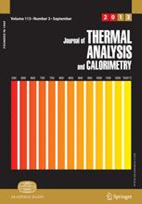
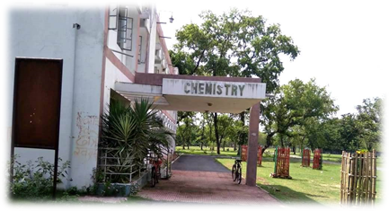

SATAC
2021
December 21-22, 2021
Magadh University, Bodh Gaya, India
Magadh University, Bodh Gaya, India
| Home | Registration | Abstract Submission | Updates | Program | Directions | Flyer |
Programme Schedule and Meeting Link (Revised):
Download
IMPORTANT ANNOUNCEMENT: On multiple requests, the last date of registration has been extended to 17.12.2021.The detailed programme shall be displayed on the portal on 19.12.2021. There will be a pre-symposium lecture at 4pm IST on 20.12.2021. The registration is free.
- SATAC 2021 Team
Important Information regarding Paper Presentation: Please refer the following document for instruction about the paper presentation (Updated 18th December 2021).
Paper Presentation Instructions
It gives us pleasure in inviting you to the Symposium on Applications of Thermal Analysis and Calorimetry (SATAC-2021) which is being organised in hybrid mode (virtual/physical- in view of the pandemic) in the University Department of Chemistry, Magadh University, Bodh Gaya-824234 (India) during December 21-22, 2021.
It will be an excellent opportunity for the researchers, academicians and students interested in any branch of Thermal Analysis to discuss applications and results of their latest research works. Lectures will be organised and papers shall be presented. Limited participation in physical mode will also be there. The first such SATAC was held in India at Panjab University, Chandigarh in December 2010 and the Indian Council of Chemists (ICC) had taken the lead by organizing "SATAC-2010". A special Volume was also brought out (Vol 107, No 1, January 2012) by Journal of Thermal Analysis and Calorimetry to commemorate the event. Similarly, a special issue was brought out commemorating SATAC 2011. Sessions on interfaces with other branches of Chemical Sciences will also be held.
Confirmed Speakers include Prof. Crisan Popescu (Romania), Prof Egon Schnitzler (Brazil), Prof. Jiri Malek (Czech Republic), Prof. Peter Simon (Slovakia), Dr. Imre Sziliagyi (Hungary), Prof A.K. Tyagi (BARC, India), Dr Ratikant Mishra (India), Prof T Pal (India), Prof N B Singh (India), & Prof Arvind Saxena (India).
Registration and Abstract Submission: Please use the links below to register and/or submit abstract to the symposium.
Authors are invited to submit electronically a one-page abstract on
or before December 10, 2021. The abstract should summarize the
main concepts of the work, results and conclusions. It must be written in
English following the template provided. Times Roman font 11 pt must be
used, with the exceptions of the title (12 pt), affiliations and
references (9 pt). The text width is 130 mm and length is 200 mm. The file
must be delivered as doc or docx formats. Template can be used.
Full Paper Submission {Special issue of J. Thermal Anal.
Calorim. (Springer) devoted to SATAC-2021}.
SATAC 2021-Template for submission of Abstract

Full papers will be published in a special issue of the Journal
of Thermal Analysis and Calorimetry (JTAC) devoted to the STAC
(Symposium on Applications of Thermal Analysis & Calorimetry) after
positive reviews. The papers will be considered first come first served
basis.
Full papers can be accepted exclusively through the Editorial Manager
system, so you are kindly asked to follow the instructions at: http://www.editorialmanager.com/jtac/
It is essential to mark in the "Comments" field that this paper belongs to
the SATAC-2021. The papers will be refereed by independent reviewer(s).
The deadline of submission is: 28 February 2022.
The publication is expected at the second part of 2021. Though, the papers
can be read on the Online First much more earlier. The contact details of
the Guest Editor(s) shall be announced later.
| Symposium | December 21-22, 2021 |
| Registration and Fee Payment (if any) Last date | December 12, 2021 |
| Abstract Submission (Last Date) | December 10, 2021 |
| Announcement of Selected Abstracts | December 15, 2021 |
The venue is the University Department of Chemistry, Magadh University, Bodh Gaya-824234 (India). It is a flagship department of Magadh University (www.magadhuniversity.ac.in) which is the largest university in the eastern state of Bihar in India. Beyond the 34 Departments and Centers situated in the sprawling campus of the University at Bodh Gaya –the place where Lord Buddha got enlightenment over 2500 years ago, the University administers 19 constituent and 39 affiliated colleges, 1 Engineering college, 2 Law colleges and 2 Dental colleges which are spread over the Gaya, Nawada, Jehanabad, Arwal and Aurangabad districts of the state. Bodh Gaya is well connected and the university is situated on NH 83 which connects Patna, Gaya to NH-2 (Delhi-Kolkata Highway). Nearest airport is Gaya (6 km) and the nearest Railway Station is Gaya Jn which is well connected to Howrah/Kolkata (5-7hrs), Patna (2-3 hrs), Delhi (11-17 km), Mumbai, Chennai, Goa, Pune, Bhubaneshwar, Ranchi, Jammu, Dehradun, Shimla etc.
The Department got the tag of "DST-FIST
Sponsored" from the Department of Science and Technology, Govt of India in
2009 and it had also acquired the privilege of "UGC-BSR Supported".
Earlier it was recognized as a leading centre under the Faculty
Improvement Programme of the University Grants Commission (UGC) in 1977.
The Department hosted the 27th Annual Convention of Chemists and the
annual conference of the Indian Chemical Society during 26-30 December
1990 under the Chairmanship of Professor B. P. Verma. Concurrent sessions
were held in seven Sections. Renowned scientist working in the field of
Thermal Analysis, Prof Ranjit K Verma formed a small group of thermal
analysts here after joining the Dept in 1983. The group marked its
presence worldwide and Dr Ranjit Verma who became Professor in 1993,
became the Secretary of ICTAC (International Confederation for Thermal
Analysis and Calorimetry) in 2012. Presently he is Vice Chairman of the
Scientific Commission of ICTAC (www.ictac.org). He is also on the
Editorial Board of the Journal of Thermal Analysis and Calorimetry
[published by Springer, Thomson Reuters Impact Factor 4.626(2020)] the
oldest and leading research journal in the field. Regional Branch of
Indian Chemical Society was opened in the Department in 1990 and the
Magadh Chapter of Indian Science Congress was started in 1997. Prof Verma
is going to superannuate on 31st December this year.
To maintain pace with the current growing field of the Chemistry,
the Department frequently organizes seminars, conference and colloquium in
the frontier areas of Chemistry. Eminent scientists and educationists from
India and abroad have been visiting the Department and have delivered
lectures and attended seminars, workshops etc. Apart from many completed
projects from the Department, ongoing project is sponsored by Department
of Science and Technology, SERB, New Delhi.
Good hotels are available at Bodh Gaya. Some are:
Besides, many other good hotels and Guest Houses are available within 3-4 km from the university campus. Online bookings can be made in all of them. For any assistance, Dr Sumit Kumar (cell + 7631923049, email: sumitkrmgr@gmail.com) can be accessed. Local transport from the hotel to the venue and back shall be provided on the dates of conference on request.
Patron:
Prof
Rajendra Prasad,
Vice
Chancellor, Magadh University.